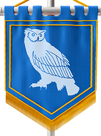

Espécies
Anão
Apesar de terem se espalhado pelo continente, anões são originais da cidade de Cortul, a famosa cidade da forja. Com a personalidade forte como uma rocha, eles têm uma visão fechada de mundo, priorizando a si e seu império, mas não se engane, uma vez que um anão faz um amigo, ele é capaz de matar dragões com as mãos nuas para defendê-lo. Anões geralmente priorizam o combate corpo a corpo e focam sua manipulação do éter para fortificar suas armaduras e armas.
Idade: Anões podem viver até 300 anos, porém a sua expectativa de vida gira em torno de 200 anos, devido ao estresse que seu corpo sofre nas minas e forjas.
Tamanho: Anões podem chegar a medir 1,5m de altura, pesando entre 40 a 80 kg, seu tamanho é médio.
Treinamento: Assim que nasce, o anão é abençoado pelo deus da forja Diok, fazendo com que seja perito na utilização de ferramentas de ferraria.
Corpo de Pedra: A resiliência anã é notória, seus corpos robustos lhe dão a capacidade de resistir com mais facilidade, um bônus de +2 é adicionado à sua Resistência.
Talento: Anões possuem o talento natural de reconhecer objetos forjados, permitindo que identifiquem em apenas 10 minutos qualquer objeto forjado que encontrar em seu caminho.
Interações: Devido aos conflitos de Cortul e Thena no passado, a maioria dos anões detestam Elfos. Por outro lado, os Anões possuem uma ligação afetiva muito grande com os Gnomos, os chamando carinhosamente de pequenos pedregulhos. Anões tem uma relação de irmandade com os Kobolds, já que eles possuem uma facilidade para encontrar minérios e trabalham com esforço.
Autômato
Criados artificialmente como o exército substituto em Spes, esses homens de lata sencientes lutaram por séculos nas linhas de frente do deserto de Geron. Com o passar das décadas, esses autômatos passaram a desenvolver consciência e sentimentos. Agora percorrem o continente com seus próprios objetivos, tentando descobrir o seu lugar no mundo enquanto descobrem o significado dos novos sentimentos e emoções que lhes foram dados.
Idade: Enquanto houver partes extras, o tempo de vida de um autômato é indefinido.
Tamanho: Autômatos foram criados em massa de uma mesma fôrma, todos eles possuem 2m de altura e pesam cerca de 180 kg, seu tamanho é médio.
Treinamento: Em sua criação, foram inseridas ferramentas nas palmas de suas mãos, ferramentas essas capazes de reparar seus corpos machucados. Todo autômato tem treinamento com ferramentas de funilaria.
Carapaça de Ferro: Devido a construção de seu corpo, um autômato detém uma resistência extra contra ataques não mágicos, sua defesa é aumentada em 1.
Talento: Autômatos possuem de fábrica, uma bússola-relógio que o permite sempre saber onde fica o norte e que horas são.
Interações: Sua natureza curiosa e inocente faz com que sejam presas fáceis de golpistas e aproveitadores. Autômatos possuem uma grande aversão a mortos-vivos.
Dalore
Viajantes de outro mundo, surgiram em Launari durante a fragmentação da realidade nos 10 anos de escuridão. Sua aparência se assemelha a de demônios, possuindo grandes chifres contorcidos, pele de coloração exótica e um rabo com ponta de flecha. Apesar dessa aparência agressiva, os dalore são muito carismáticos e sedutores, possuindo um charme único. Com o seu conhecimento sobre o oculto, eles foram de grande ajuda no reforço das defesas durante a escuridão, cativando grande parte das cidades que visitaram.
Idade: Dalores podem viver por cerca de 450 anos, dependendo da sua origem e de onde habitam.
Tamanho: Os Dalores possuem uma estatura média parecida com os humanos, eles podem medir entre 1,6m até 2,1m de altura e pesar entre 40 a 150 kg.
Metamorfo: Os Dalores possuem a habilidade de alterar sua forma física a seu bel-prazer, podendo assumir a forma de qualquer humanoide que tenha tocado. Porém, essa habilidade tem uma duração curta de 10 minutos e um resfriamento de 15 minutos. Os Dalore costumam usar luvas para mostrar para sociedade que não pretendem se disfarçar, dito isso, Dalores sem luvas são vistos com maus olhos.
Talento: Seu conhecimento do oculto trazido de outro mundo, lhes permite identificar as emoções da pessoa que tocar.
Interações: Apesar de ter caído nas graças da maior parte da população, seu sangue bastardo de demônio incita a repulsa nos Radekin, tornando a convivência entre as espécies inquietante e desconcertante.
Drakin
Uma espécie honrosa apesar de suas origens. Criados pelo primeiro dragão Cedroras como seu exército pessoal, por muito tempo os Drakin sofreram represálias e preconceitos mesmo após milhares de anos que a guerra cessou. Sua aparência se assemelha a de um grande lagarto bípede, possuindo escamas grossas e coloridas, garras e presas afiadas e um rabo grande de lagarto. Os Drakin possuem uma honra inigualável, e estão dispostos a dar sua vida por aquilo que acreditam.
Idade: Drakins podem viver cerca de 150 anos sem repouso, porém sua vida pode se estender para 300 anos se entrar em hibernação por um ano a cada 10 anos.
Tamanho: Os Drakin são criaturas grandes tendo em média 1,8m até 2,3m de altura, seu peso médio é de 70 a 120 kg. seu tamanho é médio.
Restrição: Drakins são geneticamente incompatíveis com a subespécie “Variante”.
Elemento & Afinidade: Os Drakin possuem afinidade com elementos variantes em vez de primordiais, por conta disso, todas as suas habilidade são utilizadas baseando-se em seu elemento variante, porém, dada a volatilidade de sua natureza, eles não conseguem alterar elementos quando utilizam magias elementais.
Bafo de Dragão: Os Drakin possuem a habilidade única de cuspir uma rajada elemental de sua boca. Essa rajada é disparada em um cone de 3m, causa 2d6 de dano elemental e custa 4 pontos de ação para ser utilizada. Você escolhe seu elemento de afinidade ao escolher essa espécie.
Talento: Os Drakin possuem um olfato aguçado, podendo sentir o cheiro de sangue derramado ou feridas expostas em uma distância de até 100m, os tornando ótimos caçadores.
Interações: Devido ao grande preconceito sofrido, os drakin tendem a ser mais reclusos, porém eles sentem uma ligação muito forte de camaradagem com os Jotun.
Elfo
Elfos são criaturas humanoides de pele pálida, orelhas grandes e pontudas e grandes cabelos lisos. Sua cidade natal é Thena, o berço da magia, a afinidade dos Elfos com a natureza e o etéreo é imensa, os tornando excelentes praticantes da manipulação etérea. Uma raça orgulhosa e pretensiosa, os Elfos passam a maior parte de sua longa vida estudando magia e treinando para o combate.
Idade: Elfos podem viver por até 2000 anos, mas poucos são aqueles que atingem essa marca.
Tamanho: Elfos geralmente possuem corpos altos e esguios, podendo medir de 1,6m até 2,0m de altura, pesando de 40 a 120 kg, seu tamanho é médio.
Treinamento Élfico: Suas longas vidas de treino e estudo lhes dão conhecimento tático de combate sem igual. Ao analisar uma criatura por 1 minuto, você sabe o valor de um dos atributos ou status de sua escolha.
Talento: Os Elfos possuem a habilidade natural de detectar efeitos mágicos próximos a ele, porém não consegue discernir qual magia exata afeta aquela área.
Interações: Devido às guerras do passado, o relacionamento entre Elfos e anões ainda é conturbado, levando a situações de extrema grosseria.
Gnomo
Criaturas que habitavam as florestas, mas, devido a grande expansão das cidades, decidiram entrar em contato com as grandes nações para proteger suas origens, mantendo uma boa harmonia entre civilização e natureza. Os gnomos são pequeninos, de orelhas pontiagudas, geralmente voz fanha e nariz achatado. São naturalmente atraídos pela natureza e por aqueles que tratam com respeito a floresta.
Idade: Gnomos podem viver por cerca de 600 anos na floresta. A vida na cidade é estressante para eles, vivendo apenas 400 anos em ambientes agitados.
Tamanho: Gnomos são pequenos menores que anões, a sua média de estatura é de cerca de 1m a 1,2m de altura, seu tamanho é pequeno.
Eu conheço esse esquilo: Ao completar 50 anos, o gnomo forma um contrato com uma pequena criatura da floresta, essa criatura o segue para todos os lugares como um familiar, sua função é de procurar informações com criaturas da região.
Talento: Gnomos tem uma relação muito afetiva com os animais naturais da floresta, por conta disso, eles conseguem se comunicar com criaturas utilizando gestos, assobios e rosnados.
Interações: Gnomos gostam daqueles que prezam pela natureza, eles têm um apreço genuíno pelos Lilóri, gostam dos Elfos e aturam os Anões.
Homunculus
Os Homunculus não são espécies originárias de Launari, nem são espécies que vieram de outro plano de existência, os Homunculus são Humanos criados artificialmente com o uso de magia. Eles são exatamente iguais aos humanos em aparência física, porém todo Homunculus possui cabelos brancos e olhos de íris amarela. Quase nenhuma pessoa sabe sobre a existência dessa espécie, não existe nenhum registro físico sobre ela, a tornando extremamente rara e imprevisível.
Idade: Enquanto mantiveram sua integridade física, um Homunculus pode viver por milhares de anos.
Tamanho: Possuem uma estrutura corporal idêntica aos humanos, homunculus podem medir de 1,6m a 2,10m e seu peso pode variar entre 40 e 200 kg, seu tamanho é médio.
Mutabilidade: A afinidade elemental de um homunculus é instável. Após um descanso longo role 1d10 na tabela elemental, o elemento que cair será sua afinidade durante o dia.
Talento: Por serem criados a partir de magia, os Homunculus possuem uma capacidade extraordinária na absorção de magia. Você ganha +2 em Vontade.
Interações: Eles tentam viver em sociedade, escondendo sua verdadeira identidade, afinal, são de uma espécie nunca vista antes.
Humano
Os humanos foram uma das primeiras espécies a construírem um império, seu esforço e vontade de aprender os levaram a atingir grandes feitos na história. Uma espécie frágil, com uma baixa expectativa de vida, porém com um talento para aprender e desenvolver sem igual.
Idade: Humanos podem viver até 100 anos, na melhor das hipóteses. O mais comum é de que vivam até 85 anos.
Tamanho: Possuem uma estrutura corporal parecida com a dos elfos, porém um pouco mais robusta, humanos podem medir de 1,6m a 2,10m e seu peso pode variar entre 40 e 200 kg, seu tamanho é médio.
Treinamento: Os Humanos trabalham em diversos campos de estudo, você pode escolher livremente uma ferramenta da qual é treinado.
Eu treinei pra isso: Humanos são perseverantes em trilhar o caminho que escolheram para suas vidas, você possui +2 em uma perícia a sua escolha.
Talento: Humanos possuem a habilidade de aprender com seus erros e se adaptar rapidamente, utilizando 2 dias de treinamento, você pode substituir uma habilidade ou magia a sua escolha.
Interações: Os Humanos habitam quase todas as cidades de Launari, sua relação com as outras espécies é amigável e respeitosa por grande parte. Porém, existe uma rixa entre Humanos e Lilóris.
Jotun
Os descendentes dos gigantes de Acharnes, os seus imensos corpos musculosos, azulados e intimidantes, são a casa da espécie mais gentil e carinhosa de Launari. Antigos habitantes da cidade fantasma de Rafna, os Jotun se abrigam onde são recebidos, e fazem o melhor de suas vidas, contribuindo fielmente com a sociedade que fazem parte.
Idade: Os Jotun tem uma expectativa de vida de 150 anos, podendo viver um pouco mais ou um pouco menos, dependendo da região que habitar.
Tamanho: Jotun são grandes e musculosos, sua estatura pode variar entre 2,1m a 2,6m de altura, em seu estado normal, seu tamanho é médio.
Inscrição de Runas: Um dos grandes conhecimentos passados pelas gerações foi a habilidade de imbuir um item com uma runa elemental. O Jotun consegue imbuir uma peça de armadura com um elemento lhe dando resistência ou uma arma, mudando seu tipo de dano para o elemento imbuído. Essa magia poderosa requer muita concentração do usuário, levando 1 hora para ser realizada e fazendo com que ele só consiga gravar uma runa por vez.
Talento: Os Jotun tem um talento único, eles conseguem aumentar o seu tamanho de médio para grande com o poder de suas runas de gigante, porém seus atributos permanecem os mesmos.
Interações: Os Jotun tentam manter uma relação amigável com todos aqueles que o cercam, mesmo aqueles que lhes fazem mal. Eles detêm um apreço especial pelos Drakin, empatisando com seu sofrimento.
Kobold
Semelhante aos Drakin, os Kobolds são uma espécie descendente de dragões, porém eles não foram criados como um exército e sim como mão de obra. Kobolds são pequenos lagartos bípedes, seu focinho é alongado e suas pernas possuem uma curvatura para trás, diminuindo seu tamanho. Kobolds são muito amigáveis, seu trabalho duro fez com que eles se tornassem muito bem vindos em vilarejos mineradores, porém nunca, nunca trate mal um Kobold, ele guardará rancor para o resto de sua vida.
Idade: Kobolds são considerados adultos com 5 anos, dependendo das circunstâncias de seu ambiente, podem chegar até 120 anos.
Tamanho: Kobolds são pequenos, menores que os anões e um pouco maiores que os gnomos, possuindo uma altura média de 0,9m a 1,2m de altura, seu tamanho é pequeno.
Rancoroso: Um Kobold guarda rancor para aqueles que atacam a ele ou seus aliados. Seu próximo ataque é feito com vantagem contra uma criatura que atacou você ou um aliado que possa ver.
Talento: Kobolds nascem em cavernas para trabalhar em cavernas, possuindo o talento único de conseguir localizar metais e pedras preciosas em um raio de 10m.
Interações: Esses pequenos lagartos possuem uma amizade sem igual com os anões, sua paixão pela mineração e sua eficiência em encontrar minérios possui uma sinergia sem igual com as ambições anãs. Por outro lado, Kobolds costumam detestar gnomos, a maneira como eles vivem sem fazer nada nas florestas os incomodam profundamente.
Lilóri
Uma espécie exótica originária de Glyda, seus corpos são uma mistura de animal e humano, e dependendo do animal que se pareça, possui certas características únicas. Essa espécie faz parte do exército pessoal do Príncipe, e tem ajudado na proteção da cidade de Spes devido a acordos políticos.
Idade: Lilóris podem viver por tempos variáveis, dependendo da sua misticidade, podendo chegar dos 70 aos 600 anos de idade.
Tamanho: O tamanho do Lilóri varia conforme a espécie que ele deriva, podendo ser pequeno ou médio.
Mestiço: Os Lilóri possuem uma habilidade referente a criatura que se parece conforme tabela abaixo:
Talento: Os Lilóri possuem seus sentidos aguçados devido a sua contraparte animal, por conta disso eles recebem um bônus de +1 em sua percepção.
Interações: Lilóris se dão muito bem com aqueles que respeitam o meio ambiente, tendo grande simpatia com os Gnomos e um relacionamento amigável com os Elfos. Lilóris costumam detestar Humanos e Anões, devido a preconceitos e atitudes dessas espécies.
| Voadores (Coruja, águia, morcego, etc.) |
Possui a habilidade de se locomover pelos ares ao custo adicional de 1 ponto de movimentação. | Cavadores (Lagartos, Fuinhas, Tatus etc.) |
Possui a habilidade de se enterrar e andar por debaixo da terra ao custo adicional de 1 ponto de movimentação. | Caçadores (Gatos, Cachorros, Ursos etc.) |
Possui a habilidade de pular, agarrar e derrubar sua presa ao custo de 1 ponto de movimentação. O alvo deve fazer um teste de Resistência para se manter de pé. | Saltadores (Coelhos, Sapos, Cangurus etc.) |
Possui a habilidade de saltar uma altura de 5m ao custo adicional de 1 ponto de movimentação. Se esse salto for seguido de um ataque, adicione 1d4 ao dano. | Nadadores (Peixes, Jacarés, Golfinhos etc.) |
Possui a habilidade natural de nadar a um custo reduzido de 1 ponto de movimentação. Nadadores possuem vantagem em ataques em baixo d'água. |
Meio-Orc
Dificilmente encontrados vivendo em sociedade, os orcs em sua grande maioria vivem isolados na parte leste das ilhas Melkar. Alguns desses orcs que fugiram da ilha e decidiram levar uma vida longe das guerras, vivem como mercenários os trabalhadores dos campos. Devido a essa migração, surgiu-se uma nova raça que agora vive entre os humanóides de Liádril, os meio-orc.
Idade: Meio-Orcs podem viver por cerca de 70 anos, dependendo do seu modo de vida, podem chegar aos 90, mas é algo raro.
Tamanho: Os Meio-Orcs tem uma estatura parecida ao dos Traunar, altos e fortes, podendo chegar a medir 2,30 de altura. Seu tamanho é médio.
Ainda posso lutar: A resiliência Orc é excepcional, os meio-orcs herdaram de seus antecedentes a capacidade de se reerguer quando caídos em batalha. Quando sua saúde chegar a 0, você pode escolher receber uma falha de sobrevivência para continuar de pé em combate por uma quantidade de turnos equivalente a metade do seu modificador de Vigor (mínimo de 1), durante esse tempo você ignora qualquer dano inferior a metade de sua vida total. Essa habilidade pode ser usada uma vez por descanso longo.
Talento: Devido a resiliência de seus corpos, os Meio-Orcs possuem vantagem em testes de Exaustão.
Interações: Os Meios-Orcs possuem um bom relacionamento com as vilas ao redor de Karini, porém em Yrgal e Kalos, os meio-orcs são vistos com maus olhos e tratados com muito preconceito.
Mestiço
Mestiços são pessoas geradas na união de duas espécies biológicas diferentes, possuindo características e aparência peculiares. Mestiços costumam possuir grande parte de sua aparência derivada de um dos parentes, mostrando alguns traços marcantes de seu outro parente, porém existem exceções, onde pessoas com aparência extremamente exótica aparecem. Mestiços se misturam na sociedade atual sem problemas, foi-se o tempo em que união inter-espécie era considerada um tabu.
Idade: A expectativa de vida de um mestiço é calculada pela média dos seus progenitores naturais.
Tamanho: O tamanho de um mestiço varia de acordo com sua descendência, podendo variar de pequeno para médio.
Habilidade: Escolha uma habilidade natural de um dos progenitores naturais.
Talento: Escolha um talento natural de um de seus progenitores naturais.
Interações: Geralmente possuem as interações características de seus progenitores naturais.
Pélapo
Os Pélapos são conhecidos pela sua grande sorte em suas realizações, seja na colheita, na venda ou em artimanhas ilegais. Eles são humanos pequenos, um pouco menores que anões, eles sempre andam descalços, seus pés são desproporcionalmente maiores e bem cabeludos. Na maior parte do tempo eles comem, bebem e se divertem, realizando os mais fantásticos eventos em Launari.
Idade: Pélapos que vivem em fazendas do interior costumam viver até os 150 anos, aqueles que vivem nas cidades costumam extravasar um pouco demais, vivendo até os seus 80 ou 90 anos.
Tamanho: Os Pélapos são pequenos, sua média de estatura é de 1,10m, podendo chegar até 1,30. Seu tamanho é pequeno.
Sortudo: A sorte dos Pélapos é extraordinária, ao falhar um teste que envolva ferramentas ou perícias você pode rolar novamente. Pélapos, no entanto, possuem um ditado que diz para não abusar da sorte, utilizar essa habilidade mais de uma vez em menos de 12 horas faz com que seu próximo teste seja uma falha crítica.
Talento: Devido a sempre andarem descalços, os Pélapos são excelentes em furtividade. Você ganha +2 em furtividade.
Interações: Os Pélapos possuem uma relação de amizade com quase todas as raças, dadas as suas festas. Porém, Pélapos tem medo dos Traunar, por sua aparência bruta e amedrontadora.
Radekin
Habitantes das longínquas ilhas Dídymoi, esses seres semi-celestiais prezam pela perseverança de sua moribunda espécie. Eles possuem características humanas com um único detalhe diferenciador, seus olhos emitem uma luz amarela, deixando clara sua linhagem divina. Os remanescentes dessa espécie perambulam por Launari, aceitando trabalhos que geralmente envolvem dar cabo de criaturas vis.
Idade: Os registros mostram que os Radekin não envelhecem após atingirem a maioridade, é dito também que são uma linhagem direta dos guardiões, podendo viver indefinidamente.
Tamanho: Radekins possuem a mesma estrutura corporal de um ser humano, medindo de 1,6m a 2,10m e seu peso pode variar entre 40 e 130 kg, seu tamanho é médio.
Percepção Divina: Os Radekin possuem uma habilidade única, um senso capaz de localizar exatamente criaturas de sangue demoníaco ou amaldiçoado em uma área de 10m.
Talento: Os ataques dos Radekin são imbuídos com uma energia mágica específica, que tem maior efetividade contra demônios e amaldiçoados, causando 1d4 extra de dano Solar.
Interações: Os Radekin possuem um acordo com os Anões e Elfos de Thena e Cortul. Devido a sua sensibilidade ao sangue demoníaco, os Radekin tendem a evitar os Dalores.
Traunar
Habitantes do oeste das ilhas Melkar, eram inimigos naturais de Gnork, e estavam à beira de sua extinção devido às incessantes invasões destes inimigos. Com a chegada de outras tribos à ilha, os Traunar estabeleceram um acordo de mútua ajuda para enfrentar Gnork. Essa espécie de pele com tons que variam de verde para azul, possui também presas enormes e protuberantes na parte inferior de sua boca, assim como uma grande cabeleira que mais parece um moicano, indo do topo de suas cabeças até o centro de suas costas.
Idade: Os Traunar tinham uma expectativa de vida muito baixa, aproximadamente 30 a 40 anos. Com a chegada dos aliados, sua qualidade de vida melhorou e suas chances de prevalecer aumentaram drasticamente, atualmente chegando a viver por cerca de 150 anos.
Tamanho: Os Traunar são particularmente grandes e fortes, variando de 1,95m a 2,50m chegando a pesar até 250 kg. Um Traunar abaixo de 2m de altura é considerado pequeno e frágil por sua tribo, seu tamanho é médio.
Regeneração Acelerada: Ao receber dano, os Traunar possuem a habilidade de absorver parte do dano recebido em forma de cura, podendo regenerar o equivalente ao seu valor de Resistência. Contudo, essa é uma habilidade utilizada como último recurso, já que ao realizá-la, fica vulnerável a ataques inimigos. O próximo ataque sofrido terá vantagem.
Talento: O sangue do Traunar é verde, viscoso e ácido. Uma criatura que acerta um ataque contra um Traunar corpo a corpo, recebe 1d4 de dano ácido.
Interações: Os Traunar possuem um apreço para aqueles que fundaram a cidade de Kalos, e se dão bem com a maioria das espécies. Eles costumam ter uma rivalidade saudável com os Jotun, para ver qual espécie é a maior e mais forte.
Variante

Às vezes, casos raros aparecem no mundo, pessoas que nasceram com afinidade em dois elementos ou que despertaram por meios não convencionais durante sua vida. Variantes podem aparecer em qualquer espécie, exceto Drakin, em qualquer momento e sem nenhum aviso. Um variante é extremamente cobiçada por líderes políticos e militares, dado o potencial de seus poderes, e por conta disso, a taxa de fatalidade de variantes é enorme, por conta de inimigos de seus benfeitores.
Idade: Um variante possui a expectativa de vida de sua espécie base.
Tamanho: Um variante possui o tamanho de sua espécie base.
Restrição: Ao escolher essa espécie você não possuirá a habilidade, treinamento e talento de sua espécie base.
Dualidade: Um variante possui afinidade com dois elementos em vez de um, porém não consegue alterar o elemento de uma habilidade para um que não seja sua afinidade.
Talento: Se atacado com uma magia de elemento que possui afinidade, o variante pode absorver o ataque, curando o equivalente ao seu nível + bônus de proficiência. Alternativamente, o Variante pode refletir essa magia de volta para o conjurador. Essa habilidade pode ser utilizada 2 vezes por dia com segurança, usos posteriores podem causar sobrecarga.
Interações: Variantes costumam ser contratados por nobres ou forças militares, mas existem aqueles que decidem seguir seu próprio caminho como um aventureiro ou mercenário, sendo esses mais propícios a esconder seus poderes.
Varryk
Varryks são criaturas da noite amaldiçoadas com a vida eterna que possuem muitas semelhanças com os Vampiros, eles possuem uma força e velocidade sobrenatural, porém para sustentar seu corpo, precisam se alimentar de sangue periodicamente. Sua pele é pálida e seus olhos possuem uma cor vermelha viva. A diferença entre um Varryk e um Vampiro está envolvida no seu ritual de criação, enquanto os Vampiros se tornam mortos-vivos sem alma, os Varryks se tornam aberrações que mantém sua alma e humanidade.
Idade: Varryks podem viver eternamente, porém existem vários fatores que os impedem de alcançar esse feito.
Tamanho: Como são derivados de outras espécies, seu tamanho pode variar bastante, podendo medir de 1m a 2,30m de altura, seu tamanho é pequeno ou médio.
Restrição: Varryks só podem entrar em uma residência se forem convidados.
Dia & Noite: Durante o dia os Varryks são mais lentos, seu movimento cai para 4m, se exposto diretamente ao sol, o Varryks sofre 1d6 de dano solar, geralmente utilizam chapéus bem grandes, óculos escuros e lenço cobrindo o rosto. Durante a noite os Varryks ficam mais rápidos e mais fortes, seu movimento aumenta para 6m e sua força aumenta em 1.
Talento: Ao beber sangue de uma criatura viva, o Varryk regenera 1d8 + vigor de saúde, essa habilidade tem efeito 1 vez a cada 12 horas. Alguns Varryks sofreram mutações que os tornaram capazes de se alimentar de sonhos, assim como sangue.
Interações: Varryks não são vistos com bons olhos, por serem confundidos com vampiros, por conta disso eles tentam se manter disfarçados de grande parte das raças, principalmente dos Radekin. Por outro lado, os Dalore costumam simpatizar com os Varryks, mantendo uma relação amigável.
Vorterra
Os Vorterra são frutos de um experimento realizado pelo primeiro arquimago no intuito de gerar criaturas com potentes afinidades elementais. Tamanho foi o sucesso que o resultado se mostrou ser humanoides com uma aparência física marcada pelo elemento de sua afinidade, seja no cabelo ondulante como se estivesse submerso ou jogado ao vento, seja na pele grossa e arenosa ou o calor excessivo do corpo. Traços assim são característicos dos Vorterras, assim como o orgulho de sua forma e de suas capacidades que se traduzem nas roupas extravagantes que geralmente usam e na preferência por viver em grandes centros urbanos.
Idade: Vorterras vivem por cerca de 80 anos, sua existência é extremamente volátil, geralmente se isolam antes de faleceram para evitar catástrofes a outras criaturas.
Tamanho: Possuem uma estrutura corporal parecida aos humanos, podendo medir de 1,6m a 2,10m e seu peso pode variar entre 40 e 180 kg, seu tamanho é médio.
Elemental: Cada Vorterra possui uma característica única de seu elemento que pode utilizar 2 vezes por dia com segurança, usos posteriores podem causar sobrecarga, conforme tabela abaixo.
Talento: Ao ser atacado com uma magia igual ao seu elemento, parte do dano é absorvido pelo seu corpo, esse valor é equivalente a sua Vontade.
Interações: Os Vorterras gostam de festas e lugares populosos, por conta disso é muito raro ver Vorterras em vilarejos ou cidadelas. Vorterras costumam ter uma relação muito amigável com os Dalores.
| Água | Podem passar por espaços estreitos de até 1 cm por 10 minutos. | Ar | Podem se mover flutuando 1m acima do chão por 10 minutos. | Fogo | Podem emitir uma luz fraca de 10m de alcance por 10 minutos. | Terra | Podem se camuflar em pedras, rochedos e cavernas por 10 minutos. | Lunar | Podem usar Curar Ferimentos I. | Solar | Podem usar Escudo Solar I. |